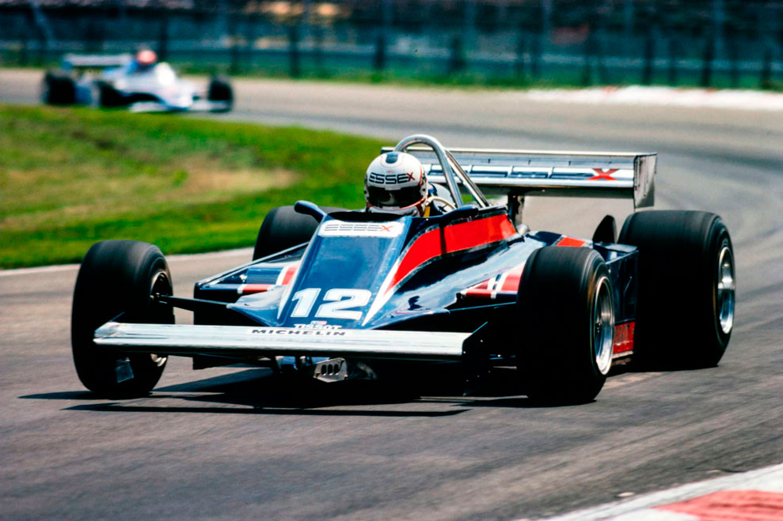

HORROR E DESESPERO EM ZOLDER

Há muito tempo a F-1 não assistia a espetáculo tão macabro quanto o GP da Bélgica. Um mecânico morto e outro muito ferido foi o saldo de um espetáculo que Reutemann não teve condições de comemorar
Revista Autosport
A televisão transmitiu direto o horripilante espetáculo para milhões de pessoas no mundo inteiro. No chão, contorcendo-se em convulsões, um mecânico da equipe Arrows protagonizava o último ato de uma tragédia que começara no sábado quando Carlos Reutemann atropelara — e matara — um outro companheiro, da equipe Osella. Para completar, Sigfried Sthor, um laureado psicanalista piloto, não conseguia conter seu desespero e batia ambas as mãos no capacete. Era realmente demais. Atropelar, no exato momento da largada, um mecânico de sua própria equipe, era a última coisa que este novato da F-1 poderia imaginar. Ainda mais depois dos acontecimentos do dia anterior.
No Grande Prêmio da Bélgica, em Zolder, o que menos importou realmente foi a vitória de Carlos Reutemann. Para os detratores do automobilismo de competição, este pobre espetáculo foi um prato cheio. Houve selvageria para dar e vender e, apesar de tudo, a própria corrida apresentou situações e alternativas bastante emocionantes. Mas, na verdade, não havia mais clima. Se assistir de casa, pela televisão, já era um gesto dolorido, imagine no próprio autódromo, coadjuvando o que normalmente é uma festa que justifica os milhões de dólares investidos? Agora, ninguém assume o mea culpa e o máximo que se consegue saber a respeito é que Zolder, provavelmente — ainda provavelmente — não deverá, em 1982, ter o GP da Bélgica disputado em seu interessante traçado. Existe ainda outro provavelmente que é o possível abandono de Sigfried Sthor. Logo ele, o menos culpado de todos…
Balbúrdia no show-businees
Com tanta confusão e artilharia verbal e escrita a respeito dos desentendimentos entre FOCA e FISA, hoje em dia é moda, e fácil, crucificar Bernie Ecclestone ou Jean Maria Ballestre. Afinal, como os cartolas que mais aparecem, também deve ficar para os dois a responsabilidade por qualquer fracasso no circo da F-1. Entretanto, não há como negar, o que aconteceu em Zolder já era aguardado há algum tempo por quem observa atentamente o que se vem desenrolando nos palcos de cada Grande Prêmio. Bernie Ecclestone faz questão de vender a Fórmula 1 como um espetáculo show-businees do mais alto nível que, como tal, tem que ser regiamente premiado. Esta roda viva mercantilista, se beneficiou as contas bancárias de cada membro da FOCA, fez também com que fosse perdida a privacidade e a paz em cada país onde os containers de cada equipe são descarregados. Em todas as latitudes existem sempre os amigos, os afilhados, a quem se devem favores, pagos então com credenciais de todos os tipos e valores.

O GP do Brasil ainda permanece vivo em nossa memória. Enquanto grande parte da imprensa via seu trabalho prejudicado em função da pouca mobilidade das credenciais oferecidas, algumas crianças desfilavam impunes pelos boxes, no peito, uma carteira de assessor técnico. Imaginem o que não se devia, por exemplo, ao pai de cada uma delas? Todo mundo criticou o acontecimento e a CBA já avisou que no ano que vem vai ser diferente. Tomara. Como para demonstrar que, no fundo, a CBA simplesmente é parte de uma engrenagem, na Bélgica, o espetáculo repetiu-se. Havia tanta gente nos boxes que nem mesmo alguns cordões de isolamento conseguiam cumprir sua função. Então, o pior acabou acontecendo. Giovanni Matteo, um jovem mecânico da Osella, não conseguiu desviar-se do Williams de Reutemann que, rapidamente, voltava à pista. O choque foi violento e ele acabou batendo com a cabeça no chão. Já foi para o hospital clinicamente morto. Na Argentina, Nelson Piquet também atropelara um radialista, felizmente sem maiores consequências. No domingo, antes da largada, os mecânicos, mostrando um espírito de união até então desconhecido, resolveram fazer uma greve simbólica de cinco minutos, exatamente antes da largada. pedindo menos gente nos boxes e mais segurança.
Mais preocupado com o horário da prova — sabe lá quanto custa o minuto na televisão? — o starter autorizou a volta de aquecimento sem mesmo checar se todos os pilotos e mecânicos já estavam nas imediações de cada carro. Assim, não foi surpresa constatar que quando Nelson Piquet completou a volta, Bruno Giacomelli nem dentro do carro estava. Enquanto Reutemann gesticulava e reclamava. Piquet deu mais uma volta e, no exato momento em que finalmente assumiu sua posição no grid, quem passou a gesticular desesperadamente foi Riccardo Patrese. Com os carros perto do superaquecimento e o horário bastante atrasado, seria um martírio começar tudo de novo. E, o juiz de partida fez simplesmente que não viu. Com a pista bem estreita, um acidente era um acontecimento iminente. Mas, mesmo assim, faltando 30 segundos, pista limpa, David Luchett, mecânico da Arrows, resolveu simplesmente ignorar exato o que pedira, momentos antes, com a greve simbólica: a segurança. Pulou para a pista e, agachado atrás do Arrows de Patrese, tentou fazer o motor voltar à vida. E acendeu-se a luz verde. Sthor, largando bem, descobriu enorme espaço à sua direita. Acelerando forte, enviesou seu carro. Quando viu, já era tarde. A pancada foi tão violenta que destruiu parcialmente seu monocoque, jogando o carro de Patrese alguns metros adiante. Imprensado entre os dois, ficara Luchett. A primeira impressão era de que seu corpo despedaçado encheria de horror a quem estivesse por perto. Entretanto, ele nasceu de novo. No momento da pancada, foi jogado para o alto e seu tronco alojou-se entre o câmbio e o motor do carro de Patrese. Com as duas pernas quebradas e escoriações violentas por todo o corpo, ele, minutos mais tarde. já se encontrava fora de perigo. Deu-se outra largada, a corrida prosseguiu e Reutemann, consternado, foi o triste dono daquele pódio. Um mecânico morto e outro muito ferido foi o saldo desta autêntica balbúrdia. Pedir para que sejam tomadas providências é demais, em se tratando de um esporte de memória curta como o automobilismo. Mas, pelo menos, mais uma vez ficou patente que com ele não se pode brincar. E, quem não levar esta advertência com a devida seriedade, deve sempre esperar pelo pior. Estão aí. os números que registram todas estas tragédias.

Treinos & corrida
As fortes chuvas de sábado acabaram fazendo com que as posições no grid fossem definidas pelos tempos da classificação de sexta-feira. Naquele dia, o mais rápido foi Alan Jones, mas o feitiço virou contra o feiticeiro: de tanto reclamar da suspensão hidro-pneumática da Brabham de Piquet, a sua, recém-instalada, acabou não retornando a posição original e ele foi desclassificado, até aquele instante. Voltou à pista, tentou mais algumas voltas mas não passou do sexto lugar. Bem feito para ele, a pole-position ficou para Carlos Reutemann, absoluto, com 1m22,28s. Na segunda posição, Piquet, que esperava melhorar muito no sábado, não fosse a chuva. Em terceiro, Didier Pironi, mais uma vez mostrando que os Ferrari-Turbo, em comparação com os Renault, foram um tiro na mosca. Em quarto. Riccardo Patrese, e, por ai afora.
Chico Serra acabou classificado, mas sem que antes a imprensa especializada fizesse comentários pouco elogiosos ao atual estágio da equipe Fittipaldi que, sem patrocinador definido, sofre para colocar os carros na pista. Realmente, por incrível que pareça, esta é a pior fase da equipe, logo agora que o pessoal técnico é o que há de melhor e mais caro. Por essas e outras é que à badalada volta de Emerson à F-1 parece cada vez mais palpável. Correndo por outra equipe ele conseguiria da Marlboro, por exemplo, um patrocínio para a Fittipaldi continuar na luta.
No domingo, o tempo amanheceu perfeito, e, depois de uma corrida super-controlada — a segunda largada aconteceu 40 minutos depois —. Reutemann foi o vencedor, confirmando sua boa fase. No pódio, nem ele, nem Laffite, nem Nigel Mansell, pela primeira vez entre os três primeiros, esboçaram o mais leve sorriso. Todos, estavam conscientes da seriedade dos acontecimentos. Ouem pulou na liderança foi Pironi, seguido de Reutemann, Piquet e Jones. Ainda no início da prova. Jones ultrapassou Reutemann no exato momento em que o brasileiro também executava a mesma manobra. A sucessão foi tão rápida que em uma mesma curva o argentino perdeu duas posições. Algumas voltas depois, Piquet passava Pironi, que logo depois também perdia a posição para a dupla da Williams. Mas, a liderança do brasileiro durou pouco. Em uma curva de alta velocidade ele perdeu o controle de seu Brabham e bateu no guard-rail, segundo ele, decorrência de uma manobra mal intencionada de Alan Jones. Se isso foi verdade, o castigo veio a seguir: o próprio Jones também perdeu o controle de seu Williams e bateu forte, ferindo levemente a perna esquerda. Não mais que de repente, Reutemann voltava à primeira posição e caminhava tranqüilo para vencer, 18 voltas antes do final certo, prova interrompida pela chuva. Um GP em que, mais do que nunca, sua estrela brilhou mais forte. Chico Serra, que largou bem e no início chegou dar a impressão de que poderia dar trabalho, enfrentou pane na parte elétrica e parou por duas vezes, abandonando de vez na segunda parada.